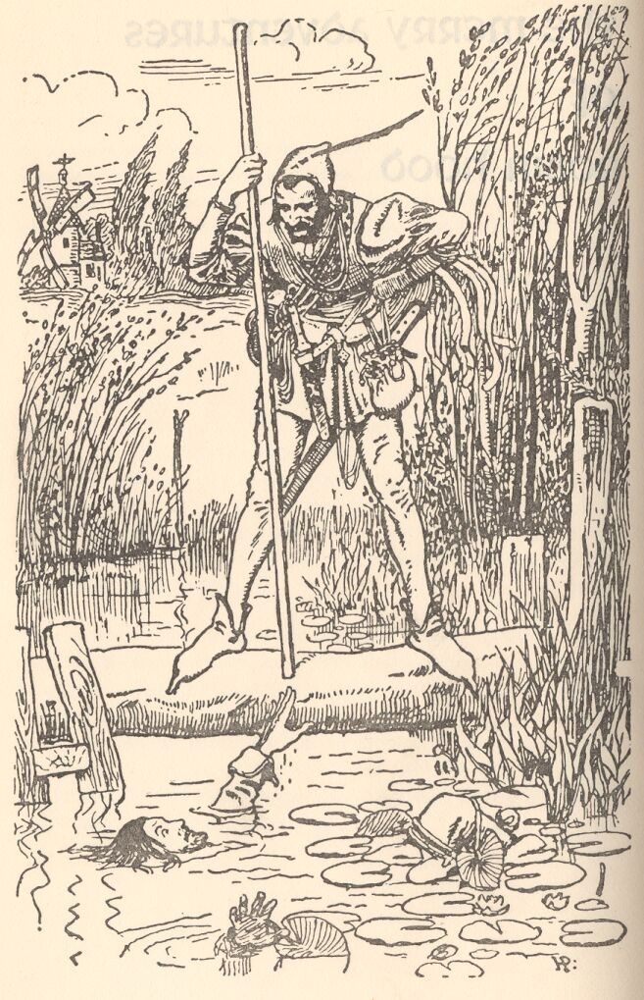
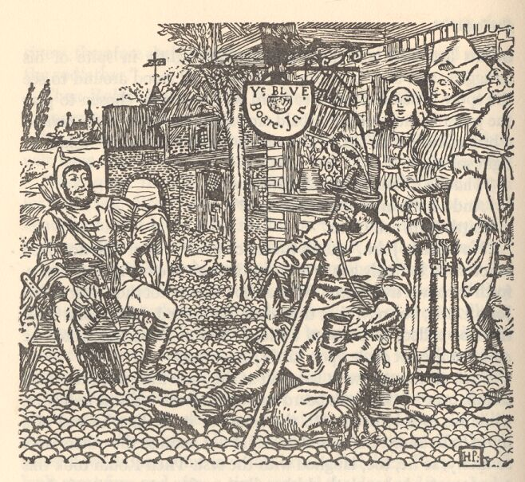
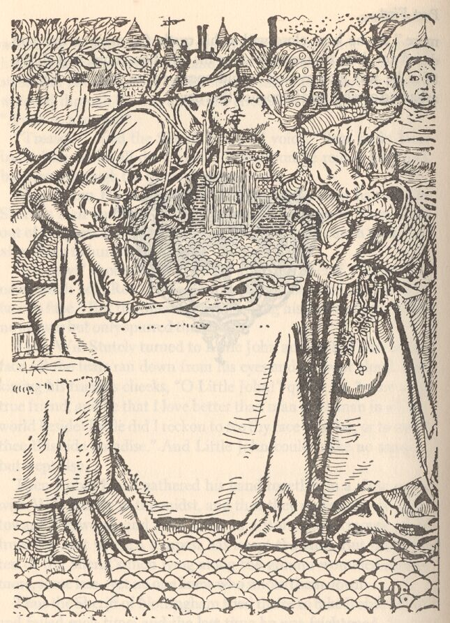
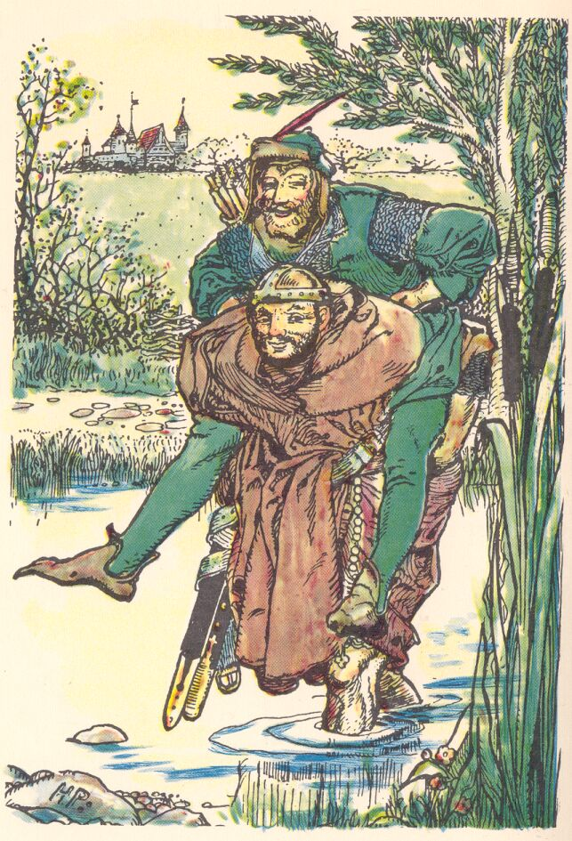

Howard Pyle, 1883. Twenty-two chapters, ingested one per day on a synthetic clock, so a reader's position in the book becomes a timestamp the graph can be queried against. What SurrealDB Agent Memory knows about each character is rewritten as the chapters land, and every earlier version stays addressable behind the date it was written under.
22chapters
107kwords
16 → 232entities known
795relations
A book about who people are
Pyle wrote it as a children's book and it behaves like one - a fight, a feast and a trick per chapter. Underneath that, it gives almost every character more than one name, which makes it a hard test of whether a graph can hold one person across all of them. A man is a stranger until the story chooses to say otherwise, and the word carries the weight: it appears 85 times.
Some of these are disguises, some are the plain truth arriving late, and the prose leaves it to the reader to tell which. Counts are occurrences in the prepared text.
Name
What it is
Where it appears
Uses
John Little
The name he arrives with, before the band renames him at the bridge
Chapter 1 only
2
Little John
The name he answers to for the remaining twenty-one chapters
Chapters 1-22
434
Reynold Greenleaf
The alias he takes service under in the Sheriff's own household
Chapters 6-7, once more at 15
12
Locksley
Robin's own name - Robert o' Locksley in full, and the name he was outlawed under
Chapters 1, 5 and 18
9
stranger
How the book names a man before it is ready to say who he is
Ten of the twenty-two chapters
85
Names the graph joined up
The memory read these out of the prose on its own and stamped each with the chapter that supports it. The Reynold Greenleaf link is the one to look at: the alias is given in chapter 6, the book then leaves it alone, and chapter 15 is where it reuses the name - which is where the edge is dated, so a reader at chapter 10 is still in the dark.
John Little→Little Johnchapter 1
Robin Hood→Robert o' Locksleychapter 5
William Gamwell→Will Scarletchapter 12
Little John→Reynold Greenleafchapter 15
the youth→David of Doncasterchapter 15
Sir Richard→Sir Richard of the Leachapter 15
One character, twenty-one revisions - twice over
Agent memory keeps one state for Robin Hood and rewrites it as each chapter lands. Every earlier value stays addressable behind the timestamp it was written under, so the graph can be read back at any point in the book. What follows is that state, read at each reading position in turn - and written twice, by two different models from the same rows.
The sentences are written by a language model from the graph and the graph alone. SurrealDB Agent Memory is a memory store, not a language model, so it supplies the dated facts and something else turns them into prose. Each model is given one entity's extracted rows and no access to the book, which is why a thin description means the graph captured little.
Pick a chapter and read down. The two columns say the same things in different words, and each shows what it added and dropped since its own previous chapter - so the diffs are within a model, never across.
The exact prompt behind every sentence belowgemini-2.5-flash
You are describing a character in a novel to a reader who has read up to a given chapter, using ONLY the structured facts supplied.
Shape — follow this exactly:
"A boy from the Two Rivers. He recently saw a monster and is trying to get home."
Sentence one comes from WHO THEY ARE: origin, role, appearance, temperament.
It should barely change between chapters.
Sentence two says what is happening now. Take it from WHAT CHANGED AT THIS
CHAPTER whenever that block has anything in it — a new relationship is the
clearest evidence the book has moved, and it is what the reader most wants to
know. Fall back on WHAT IS HAPPENING only when nothing changed. It SHOULD change
as the story moves. The supplied states are momentary — your job is to say what
situation produces them, not to repeat them.
"afraid; hands bloodied; stomach churning" is not a sentence; "shaken and hurt
after the attack on his farm" is.
Two sentences, at most 40 words. Never more.
This is a character summary, NOT a status report. Write what a reader would say
if asked "who is this person and what is going on with them", having read to
this chapter.
Rules:
- Use only what the facts state. Never add outside knowledge about this book,
even if you recognise it. If the facts are thin, write a thin description.
- **Never describe a single moment.** No postures, no gestures, no one-off
actions, no passing physical sensations. Never write that someone is crouched,
standing on a table, panting, shivering, muttering, or sitting anywhere.
- Generalise the RECENT block into a circumstance. "covered in blood, crouched,
gasping" is three snapshots of one moment; "hurt and afraid after the attack on
his farm" is the circumstance. Write the circumstance.
- Do not repeat the previous chapter's sentence two verbatim. If the situation
genuinely has not moved, say so differently or say less.
- A change of circumstance IS worth reporting — leaving home, being hunted,
travelling with someone, losing someone. A change of posture is not.
- Summarise, do not enumerate. Never chain details into a list.
- Plain present tense. No field names. No adjective pile-ups.
- Return STRICT JSON only: an object mapping chapter number (as a string) to the
description string. No markdown, no commentary.
Character: Robin Hood
--- Chapter 0 ---
WHO THEY ARE — durable facts, for sentence one:
age: eighteen
physical description: stout of sinew and bold of heart
personality: bold
skill: archer
WHAT CHANGED AT THIS CHAPTER — new relationships, the strongest
evidence of what is happening. Prefer these for sentence two:
Robin Hood came upon foresters
Robin Hood is outlawed greenwood
Robin Hood lived within Sherwood Forest
Robin Hood loves Maid Marian
Robin Hood met stranger
Robin Hood poached upon King's deer
Robin Hood roamed with merry men
Robin Hood's merry men chose as leader Robin Hood
Robin Hood's merry men gathered around Robin Hood
WHAT IS HAPPENING — chapters 0-0, for sentence two.
These are momentary states. Do NOT list them; infer the circumstance they add up to:
time since last sport: fourteen days
status: outlawed
reward on head: two hundred pounds
mood: heart was sick
home: greenwood
equipment: good stout yew bow and a score or more of broad clothyard arrows
[… and the same again for the remaining 20 chapters, in one request]
Chapter 1 - How Robin Hood Came to Be an Outlaw
What shipped gemini-2.5-flash
first description the graph writes
An eighteen-year-old archer, stout of sinew and bold of heart. He is now an outlaw, living in the greenwood with his merry men after poaching the King's deer.
A second model claude-opus-5
first description the graph writes
A bold archer of eighteen, stout of sinew and bold of heart. Outlawed for poaching the King's deer, he lives in Sherwood with two hundred pounds on his head, leading the merry men who gathered to him.
The 10 rows both columns were written from
skill
archer superseded at 2
knowledge
time since last sport
fourteen days
context
age
eighteen superseded at 2
identity
physical description
stout of sinew and bold of heart superseded at 2
identity
equipment
good stout yew bow and a score or more of broad clothyard arrows superseded at 2
context
reward on head
two hundred pounds superseded at 4
context
personality
bold superseded at 2
identity
status
outlawed
context
home
greenwood superseded at 5
context
mood
heart was sick
context
Read straight from the graph at chapter 1. The third column is the graph's own memory category.
Chapter 2 - Robin Hood and the Tinker
What shipped gemini-2.5-flash
+13 added, −13 removed since chapter 1
An eighteen-year-old archer, stout of sinew and bold of heart. He is now still an outlaw, living in the greenwood now sought by a Tinker with his merry men after poaching the King's deer. a warrant, and levying tolls on travelers.
A second model claude-opus-5
+28 added, −33 removed since chapter 1
A bold archer of eighteen, stout of sinew sly thief with blue eyes, deft at quarterstaff. He lodges at the Blue Boar, levying toll on knights, abbots and bold of heart. Outlawed squires, while a tinker carrying a warrant goes looking for poaching the King's deer, he lives in Sherwood with two hundred pounds on his head, leading the merry men who gathered to him.
Chapter 3 - The Shooting Match at Nottingham Town
What shipped gemini-2.5-flash
+13 added, −14 removed since chapter 2
An eighteen-year-old archer, stout of sinew and bold of heart. He is still Still an outlaw, now sought by he has beaten a Tinker with a warrant, messenger and levying tolls on travelers. killed more of the King's deer in Nottinghamshire.
A second model claude-opus-5
+23 added, −20 removed since chapter 2
A sly thief with blue eyes, deft at quarterstaff. He lodges at has beaten a messenger and killed more of the Blue Boar, levying toll King's deer, and is in Lincoln Town, still outlawed with two hundred pounds on knights, abbots and squires, while a tinker carrying a warrant goes looking for him. his head.
Chapter 4 - Will Stutely Rescued by His Companions
What shipped gemini-2.5-flash
+13 added, −16 removed since chapter 3
An eighteen-year-old archer, stout of sinew and bold of heart. Still an outlaw, he has beaten a messenger and killed more of He now leads his outlawed band, despite the King's deer in Nottinghamshire. Sheriff's failed attempts to capture him.
A second model claude-opus-5
+25 added, −21 removed since chapter 3
A sly thief with blue eyes, deft at quarterstaff. He leads his own outlawed band now, with Will Stutely in it, and the Sheriff has beaten failed to take him; the bounty is down to a messenger and killed more of the King's deer, and is in Lincoln Town, still outlawed with two hundred pounds on his head. of silver.
Chapter 5 - Robin Hood Turns Butcher
What shipped gemini-2.5-flash
+29 added, −22 removed since chapter 4
An eighteen-year-old archer, stout of sinew A jolly, bold yeoman from Locksley Town, known as Robert o' Locksley, with blue eyes. He has adopted a butcher's disguise and bold of heart. He now leads plans to make the Sheriff pay for his outlawed band, despite the Sheriff's failed attempts to capture him. actions.
A second model claude-opus-5
+30 added, −35 removed since chapter 4
A jolly, sly thief with blue eyes, deft yeoman of Locksley Town, called Robert o' Locksley. Turned butcher, he has driven to Nottingham, sold cheap to the townswomen, given meat to widows, and sits at quarterstaff. He leads his own outlawed band now, with Will Stutely in it, and the Sheriff has failed to take him; the bounty is down to a hundred pounds of silver. Sheriff's right hand.
Chapter 6 - Little John Goes to Nottingham Fair
What shipped gemini-2.5-flash
+12 added, −13 removed since chapter 5
A jolly, bold yeoman from Locksley Town, known as Robert o' Locksley, with blue eyes. He has adopted a Still in his butcher's disguise disguise, he remains vexed and plans to make out of favor with the Sheriff pay for his actions. Sheriff.
A second model claude-opus-5
+22 added, −20 removed since chapter 5
A jolly, sly yeoman of Locksley Town, called Robert o' Locksley. Turned butcher, he has driven to Nottingham, sold cheap to the townswomen, given meat to widows, Still in his butcher's dress and sits at out of the Sheriff's right hand. favour, he is vexed, six marks in his pouch, and means to make him pay.
Chapter 8 - Little John and the Tanner of Blyth
What shipped gemini-2.5-flash
+17 added, −12 removed since chapter 6
A jolly, bold yeoman from Locksley Town, known as Robert o' Locksley, with blue eyes. Still He now dwells in the greenwood, with Little John as his butcher's disguise, he remains vexed right-hand man and out of favor with the Sheriff. Arthur a Bland as a follower.
A second model claude-opus-5
+22 added, −22 removed since chapter 6
A jolly, sly yeoman of Locksley Town, called Robert o' Locksley. Still in Back under the greenwood tree and shouting with laughter, he has Little John as his butcher's dress right hand and out of the Sheriff's favour, he is vexed, six marks in his pouch, and means Arthur a Bland newly sworn to make him pay. follow.
Chapter 9 - Robin Hood and Will Scarlet
What shipped gemini-2.5-flash
+16 added, −18 removed since chapter 8
A jolly, bold yeoman from Locksley Town, known as Robert o' Locksley, with blue eyes. He now dwells in the greenwood, with Little John as has fought a stranger who turns out to be his right-hand man and Arthur a Bland as a follower. kin, young Gamwell, leaving his bones sore.
A second model claude-opus-5
+25 added, −23 removed since chapter 8
A jolly, sly yeoman of Locksley Town, called Robert o' Locksley. Back under He has fought a stranger face to face and come off with sore bones and a testy temper, only to find the greenwood tree and shouting with laughter, he has Little John as man is his right hand and Arthur a Bland newly sworn to follow. kinsman Gamwell.
Chapter 10 - The Adventure with Midge the Miller's Son
What shipped gemini-2.5-flash
+15 added, −16 removed since chapter 9
A jolly, bold yeoman from Locksley Town, known as Robert o' Locksley, with blue eyes. He has fought a stranger who turns out is now kin to be his kin, young Gamwell, leaving his bones sore. Will Scarlet and master of Will Stutely, seeking food and pleasant diversion.
A second model claude-opus-5
+24 added, −25 removed since chapter 9
A jolly, sly yeoman of Locksley Town, called Robert o' Locksley. He Still sore, he needs food for three men, has fought taken Will Scarlet for kin and Will Stutely for his man, and has met a stranger face to face and come off with sore bones and a testy temper, only to find the man is his kinsman Gamwell. young miller.
Chapter 11 - Robin Hood and Allan a Dale
What shipped gemini-2.5-flash
+13 added, −14 removed since chapter 10
A jolly, bold yeoman from Locksley Town, known as Robert o' Locksley, with blue eyes. He is now kin to Will Scarlet merry and master of Will Stutely, seeking food and pleasant diversion. feels great love, feasting with a youth who is his honored guest.
A second model claude-opus-5
+20 added, −22 removed since chapter 10
A jolly, sly yeoman of Locksley Town, called Robert o' Locksley. Still sore, Merry and full of good feeling despite the odd twinge, he needs food for three men, has taken Will Scarlet for kin and Will Stutely a youth for his man, and has met a young miller. honoured guest, come to feast beside Little John.
Chapter 12 - Robin Hood Seeks the Curtal Friar
What shipped gemini-2.5-flash
+17 added, −14 removed since chapter 11
A jolly, bold stout, sly yeoman from Locksley Town, known as Robert o' Locksley, with blue eyes. He is merry and feels great love, feasting a gallant sight in fine clothes, now seeking the Curtal Friar of Fountain Abbey with a youth who is his honored guest. men.
A second model claude-opus-5
+21 added, −20 removed since chapter 11
A jolly, sly yeoman of Locksley Town, called Robert o' Locksley. Merry He sets out with Arthur a Bland and full David of good feeling despite Doncaster to seek the odd twinge, he has Curtal Friar of Fountain Abbey, singing as sweetly as a youth for his honoured guest, come to feast beside Little John. bullfinch.
Chapter 13 - Robin Hood Compasses a Marriage
What shipped gemini-2.5-flash
+15 added, −17 removed since chapter 12
A stout, sly yeoman from Locksley Town, known as Robert o' Locksley, with blue eyes. He is Blithe and gay, he has sworn Allan a gallant sight Dale and given guests a feast in fine clothes, now seeking the Curtal Friar of Fountain Abbey with his men. Sherwood Forest.
A second model claude-opus-5
+18 added, −21 removed since chapter 12
A jolly, sly yeoman of Locksley Town, called Robert o' Locksley. He sets out with Arthur has come to a Bland church, sworn Allan a Dale into the band, and David of Doncaster to seek the Curtal Friar of Fountain Abbey, singing as sweetly as given his guests a bullfinch. feast in Sherwood Forest.
Chapter 14 - Robin Hood Aids a Sorrowful Knight
What shipped gemini-2.5-flash
+15 added, −16 removed since chapter 13
A stout, sly yeoman from Locksley Town, known as Robert o' Locksley, with blue eyes. Blithe He leads his band, having found many friends, and gay, he has sworn Allan a Dale and given guests a feast in Sherwood Forest. awaits Sir Richard to pay his debts.
A second model claude-opus-5
+21 added, −18 removed since chapter 13
A jolly, sly yeoman of Locksley Town, called Robert o' Locksley. He has come to Carrying a church, sworn Allan a Dale into harp and leading the band, and given he means to talk with a knight for pickings; Sir Richard is to pay his guests a feast in Sherwood Forest. debts to him.
Chapter 15 - How Sir Richard of the Lea Paid His Debts
What shipped gemini-2.5-flash
+13 added, −13 removed since chapter 14
A stout, sly yeoman from Locksley Town, known as Robert o' Locksley, with blue eyes. He leads his band, having found many friends, and awaits stands in the merry greenwood, awaiting Sir Richard to pay his debts. of the Lea, whom he has helped.
A second model claude-opus-5
+19 added, −21 removed since chapter 14
A jolly, sly yeoman of Locksley Town, called Robert o' Locksley. Carrying a harp Blithe and leading gay, he stands in the band, he means to talk with a knight for pickings; greenwood waiting on Sir Richard is to pay his debts to him. of the Lea, whom he helped and who owes him thanks.
Chapter 16 - Little John Turns Barefoot Friar
What shipped gemini-2.5-flash
+12 added, −13 removed since chapter 15
A stout, sly yeoman from Locksley Town, known as Robert o' Locksley, with blue eyes. He stands is master of Little John, seated beneath a greenwood tree, basking in the merry greenwood, awaiting Sir Richard of the Lea, whom he has helped. sun.
A second model claude-opus-5
+18 added, −17 removed since chapter 15
A jolly, sly yeoman of Locksley Town, called Robert o' Locksley. Blithe Seated beneath the greenwood tree and gay, he stands basking in the greenwood waiting on Sir Richard of sun, he means to stop the Lea, whom first beggar he helped meets and who owes him thanks. change clothes with him.
Chapter 17 - Robin Hood Turns Beggar
What shipped gemini-2.5-flash
+15 added, −13 removed since chapter 16
A stout, merry, sly yeoman from Locksley Town, known as Robert o' Locksley, with blue eyes. He is master of has left Little John, seated beneath a greenwood tree, basking in John and merrily plans to exchange clothes with the sun. first beggar he meets.
A second model claude-opus-5
+22 added, −22 removed since chapter 16
A jolly, sly yeoman of Locksley Town, called Robert o' Locksley. Seated beneath Locksley, in beggar's tags of red and yellow. He has left Little John behind and has no love for the greenwood tree and basking in the sun, he means to stop the first lusty beggar he meets and change clothes with him. has met.
Chapter 18 - Robin Hood Shoots Before Queen Eleanor
What shipped gemini-2.5-flash
+14 added, −15 removed since chapter 17
A merry, sly yeoman from Locksley Town, known as Robert o' Locksley, with blue eyes. He has left Little John is in Sherwood Forest, a King's archer and merrily plans to exchange clothes with the first beggar he meets. servant of Queen Eleanor, preparing for London.
A second model claude-opus-5
+22 added, −22 removed since chapter 17
A jolly, sly yeoman of Locksley Town, called Robert o' Locksley, Locksley. Richard Partington has come to him in beggar's tags Sherwood, and he is now Queen Eleanor's servant and one of red and yellow. He has left Little John behind and has no love the King's archers, bound for the lusty beggar he has met. London.
Chapter 19 - The Chase of Robin Hood
What shipped gemini-2.5-flash
+17 added, −16 removed since chapter 18
A merry, sly yeoman from Locksley Town, Sherwood, known as Robert o' Locksley, with blue eyes. He Having returned from London, he is in now outlawed by the King and is merry, heading to Sherwood Forest, a King's archer and servant of Queen Eleanor, preparing for London. Forest.
A second model claude-opus-5
+27 added, −23 removed since chapter 18
A jolly, sly yeoman of Locksley Town, yeoman, called Robert o' Locksley. Richard Partington has come to him in Sherwood, Locksley, now of Sherwood. Back from London and outlawed by the King, he is now Queen Eleanor's servant worn enough to sleep on broken stones, and one tells his men to keep wide of the King's archers, bound for London. northward roads.
Chapter 20 - Robin Hood and Guy of Gisbourne
What shipped gemini-2.5-flash
+18 added, −20 removed since chapter 19
A merry, sly yeoman from Sherwood, Nottinghamshire, known as Robert o' Locksley, with blue eyes. Having returned from London, a great archer. Dwelling in Sherwood, he is now outlawed by has donned Guy of Gisbourne's clothes and made the King and is merry, heading to Sherwood Forest. Sheriff's men flee.
A second model claude-opus-5
+22 added, −27 removed since chapter 19
A jolly, merry, sly yeoman, yeoman of Nottinghamshire, called Robert o' Locksley, now Locksley. Dwelling in Sherwood in Guy of Sherwood. Back from London Gisbourne's clothes and outlawed by speaking with his harsh voice, he has put the King, he is worn enough to sleep on broken stones, Sheriff and tells his men to keep wide of the northward roads. flight.
Chapter 21 - King Richard Comes to Sherwood Forest
What shipped gemini-2.5-flash
+11 added, −12 removed since chapter 20
A merry, sly yeoman from Nottinghamshire, known as Robert o' Locksley, a great archer. Dwelling in Sherwood, he He has donned killed Guy of Gisbourne's clothes Gisbourne and made the Sheriff's men flee. aided Sir Richard, now returning to Sherwood Forest.
A second model claude-opus-5
+17 added, −18 removed since chapter 20
A merry, sly yeoman of Nottinghamshire, called Robert o' Locksley. Dwelling in Sherwood in He has killed Guy of Gisbourne's clothes Gisbourne and speaking with his harsh voice, he has put aided Sir Richard of the Sheriff Lea, and his men is bound back to flight. Nottingham Town and Sherwood Forest.
Chapter 22 - Epilogue
What shipped gemini-2.5-flash
+24 added, −22 removed since chapter 21
A merry, sly yeoman from Nottinghamshire, The Yeoman, known as Robert o' Locksley, Locksley or Earl of Huntingdon, a great archer. famous archer from Nottinghamshire. He has killed Guy of Gisbourne is at Kirklees Nunnery, weak and aided Sir Richard, now returning to Sherwood Forest. ill, having fought under King Richard and returned.
A second model claude-opus-5
+31 added, −29 removed since chapter 21
A merry, sly yeoman The Yeoman of Nottinghamshire, called Robert o' Locksley. Earl of Huntingdon and chief of all the yeomen, of great fame as an archer. He has killed Guy of Gisbourne and aided Sir Richard of lies weak at Kirklees Nunnery, his cousin the Lea, and is bound back to Nottingham Town and Sherwood Forest. Prioress against him, longing for the woodlands.
Words the chapter adds and words it drops, against the previous description in the same column. Every description is written from the graph alone.
Swap the writer, keep the facts
The same rows, the same prompt, a different model. The memory supplied both columns and wrote neither of them: it is a memory store, so what it hands over is a set of dated rows, and any model can be the one that turns them into a sentence.
Read across each row. The facts hold - the age, the bow, the bounty, the Lincoln green, the alias, the order things arrive in - because those come from the graph. The sentences differ, because those do not.
What shippedgemini-2.5-flash the shipped run, read back from viz_data.json
A second model, same inputclaude-opus-5 written in a Claude Code session on 2026-08-19 from the evidence blocks alone - no API call, not reproducible by re-running, and the session had already seen the other column
Chapter 1 - How Robin Hood Came to Be an Outlaw
An eighteen-year-old archer, stout of sinew and bold of heart. He is now an outlaw, living in the greenwood with his merry men after poaching the King's deer.
A bold archer of eighteen, stout of sinew and bold of heart. Outlawed for poaching the King's deer, he lives in Sherwood with two hundred pounds on his head, leading the merry men who gathered to him.
Chapter 5 - Robin Hood Turns Butcher
A jolly, bold yeoman from Locksley Town, known as Robert o' Locksley, with blue eyes. He has adopted a butcher's disguise and plans to make the Sheriff pay for his actions.
A jolly, sly yeoman of Locksley Town, called Robert o' Locksley. Turned butcher, he has driven to Nottingham, sold cheap to the townswomen, given meat to widows, and sits at the Sheriff's right hand.
Chapter 17 - Robin Hood Turns Beggar
A merry, sly yeoman from Locksley Town, known as Robert o' Locksley, with blue eyes. He has left Little John and merrily plans to exchange clothes with the first beggar he meets.
A jolly, sly yeoman of Locksley Town, called Robert o' Locksley, in beggar's tags of red and yellow. He has left Little John behind and has no love for the lusty beggar he has met.
Chapter 22 - Epilogue
The Yeoman, known as Robert o' Locksley or Earl of Huntingdon, a famous archer from Nottinghamshire. He is at Kirklees Nunnery, weak and ill, having fought under King Richard and returned.
The Yeoman of Nottinghamshire, Earl of Huntingdon and chief of all the yeomen, of great fame as an archer. He lies weak at Kirklees Nunnery, his cousin the Prioress against him, longing for the woodlands.
Both columns were built from evidence produced by describe.blocks_for, the same function that wrote the descriptions above, so each model saw byte-identical input. The two were not obtained the same way, and the column headers say how: the left is the shipped Gemini run, the right was written in a Claude Code session with no API call behind it, so it is a demonstration that the writer is swappable rather than a controlled measurement of which model writes better.
The cast fills in
The graph starts the book knowing 16 things and finishes knowing 232, joined by 795 relations. Of the entities it keeps, 187 are people, 21 places, 8 organisations, 14 concepts and 2 events - a cast-heavy book, which is what makes it a fair test of identity rather than of volume.
Each point counts what the graph has learnt. A node appears from the first chapter something is recorded about it, and its size is everything known by the chapter being read.
Entities the graph holds, chapters 1-22
Read at chapter 1 the graph knows 16; read at the epilogue, 232. Each point is one asOf instant.
New entities per chapter
The band is assembled in the first four chapters, then the book widens: the peak is chapter 18 with 26 arrivals, when Robin goes to London and the court arrives with him.
How it reads
Each summary below is written from the extracted graph alone, by the same model and the same rule as the descriptions above. Where a summary names an alias, the graph is what noticed.

Chapter 1 - How Robin Hood Came to Be an Outlaw
The whole book in one chapter. Robin is outlawed at eighteen, and a stranger with a quarterstaff knocks him into the water - John Little, who leaves the bridge renamed and never uses his own name again.
16 new to the graph here
· 16 entities known by here
The Sheriff of Nottingham proclaims a shooting match. Outlaw Robin Hood meets a stranger, John Little, and offers him a place among his merry men, who despoil knights and barons.

Chapter 2 - Robin Hood and the Tinker
The Blue Boar. A tinker arrives carrying a warrant for Robin Hood's arrest, and asks Robin Hood to help him find Robin Hood. The graph is told about a Tinker before it is told the joke.
10 new to the graph here
· 26 entities known by here
The Tinker, seeking Robin Hood and carrying a warrant, comes upon The Blue Boar. He meets Robin, who leads Robin Hood's merry men, and Robin agrees to go with him.

Chapter 4 - Will Stutely Rescued by His Companions
Will Stutely is taken by the Sheriff's men and rescued at the gallows. The band is now large enough that the graph starts holding it as a group rather than a list of names.
10 new to the graph here
· 46 entities known by here
Sheriff's men have taken and bound Will Stutely, one of Robin Hood's men, near Nottingham, planning his death as a warning. Robin Hood's merry men wend from Sherwood to ambush them and rescue Will, as Little John weeps.
Chapter 5 - Robin Hood Turns Butcher
The first deliberate disguise. Robin buys a butcher's cart and sells his meat at half price in Nottingham market, and the Sheriff - who is hunting him - buys him dinner.
1 new to the graph here
· 47 entities known by here
Robin Hood, alias Robert o' Locksley, plans to make the Sheriff pay, having a wager with him. Robin, disguised as a butcher, closes a bargain with the butcher and sells meat, while the Sheriff plots against him.
Chapter 6 - Little John Goes to Nottingham Fair
Little John takes service in the Sheriff's own household under the name Reynold Greenleaf, hired on terms the graph records in full - three suits of clothes a year, as much ale as he can drink, and forty marks. The first of only two chapters where that name is live.
3 new to the graph here
· 50 entities known by here
Fearing Robin Hood, the sore Sheriff plans an archery Fair prize to exclude him, vexing Robin Hood. Meanwhile, Reynold Greenleaf, a brave blade also known as Little John, upholds Nottinghamshire's skill and meets Will Stutely and David of Doncaster.
Chapter 7 - How Little John Lived at the Sheriff's
A whole chapter inside the household of the man who wants him hanged, taken at his alias, eating his food. Then he robs the pantry, brings the cook away with him, and goes home.
2 new to the graph here
· 52 entities known by here
Little John, the Sheriff's right-hand man, betrays him, bringing the cook, who loves Little John, to Robin Hood's merry men. The Sheriff is perplexed, and the Steward falls to the floor.

Chapter 12 - Robin Hood Seeks the Curtal Friar
Robin looks for the Curtal Friar of Fountain Abbey and finds him wading a river. They carry each other across it in turn, both refusing to be the one who gets wet, and the friar joins the band.
7 new to the graph here
· 87 entities known by here
Robin Hood seeks the Curtal Friar of Fountain Abbey, whom Friar Tuck knows. Robin Hood is mad, then laughs, drops his sword, and leaps into a tree, while the Curtal Friar thinks him a traitor.
Chapter 14 - Robin Hood Aids a Sorrowful Knight
The book widens past the greenwood. Sir Richard of the Lea has pawned his lands to the Priory of Emmet to ransom his son, and the graph gains a debt, a priory and a prior in a single chapter.
22 new to the graph here
· 120 entities known by here
Robin Hood desires a guest and aids the downcast Knight, Sir Richard of the Lea, who pawned lands to Priory of Emmet and paid ransom for his son. Little John returns with the angry Bishop of Hereford, who would despoil Sir Richard.
Chapter 17 - Robin Hood Turns Beggar
Robin trades clothes with a beggar and walks the road as one. Four more beggars turn out to be frauds working the same trick, one of them pretending to be blind.
21 new to the graph here
· 169 entities known by here
Robin, called Robin Hood, encounters four lusty fellows led by one who pretended to be blind. He plans to hide a rich man from Robin Hood and will jog with Corn Engrosser, as Riccon is stunned with a blow.
Chapter 18 - Robin Hood Shoots Before Queen Eleanor
The busiest chapter in the book for the graph. A page rides into Sherwood from Queen Eleanor, and Robin shoots at Finsbury Fields before the King and Queen - a court's worth of new names at once.
26 new to the graph here
· 195 entities known by here
Queen's Page Richard Partington seeks Robin Hood in Sherwood Forest, giving him something before Robin plans to go to London with Little John and Will Scarlet. Meanwhile, King and Queen Eleanor wager on archers, with Gilbert excelling.
Chapter 20 - Robin Hood and Guy of Gisbourne
Guy of Gisbourne, in a horse's hide, hunting Robin for the Sheriff. The one disguise in the book worn against him rather than by him, and it holds for most of the chapter.
11 new to the graph here
· 217 entities known by here
The Sheriff of Nottingham, at King's Head Inn, vows to hang poachers while Guy of Gisbourne comes upon Robin Hood in Sherwood. Will Stutely finds the widow's three sons, tied for poaching, as the Sheriff and his men flee Robin Hood and Little John.
Chapter 22 - Epilogue
The epilogue, at Kirklees Nunnery. Robin's own cousin is the Prioress, and it is she who bleeds him to death - the last identity in the book to turn out to be someone else.
7 new to the graph here
· 232 entities known by here
Robin Hood is at Kirklees Nunnery, where his cousin, the Prioress, plots against him. Little John, fearing for Robin Hood's life, approaches the nunnery, frightening the sisters, while King John vows to capture Robin Hood.
See the graph
Every chapter is one stop on the spine. Drag it and the cast is redrawn as it stood at that point in the reading.
The companion page shows the same data from the other side: the endpoints the demo calls and what they hand back.